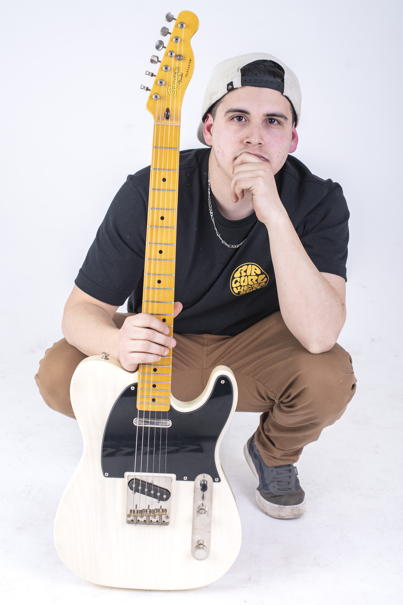

El fue uno de los fundadores de esta hermosa banda. Empezo a cantar cuando apenas tenia 10 años fue algo que le llamo mucho la atencion y lo usaba para poder despejarse de la realidad.

otjeteroter

empecé como autodidacta a los 15 años, tocando la guitarra. Y yendo a varios profesores (Mauro Serra, Pablo Fiorentini, Federico Barabino, Hernán Rupolo). Empecé con las bandas masomenos a los 17/18. En el mientras tanto aprendí un poco a tocar el bajo y la batería. Masomenos para los 24 me empezaron a interesar los estudios de grabación y la producción musical, entonces empece con eso. Estudie música en la universidad Nacional de Tres de Febrero, tengo varios cursos hechos sobre producción y ahora estoy estudiando Bajo en el Conservatorio Leopoldo Marechal.
-

uhriwhriwhiwhr
oerhwehrwigirer